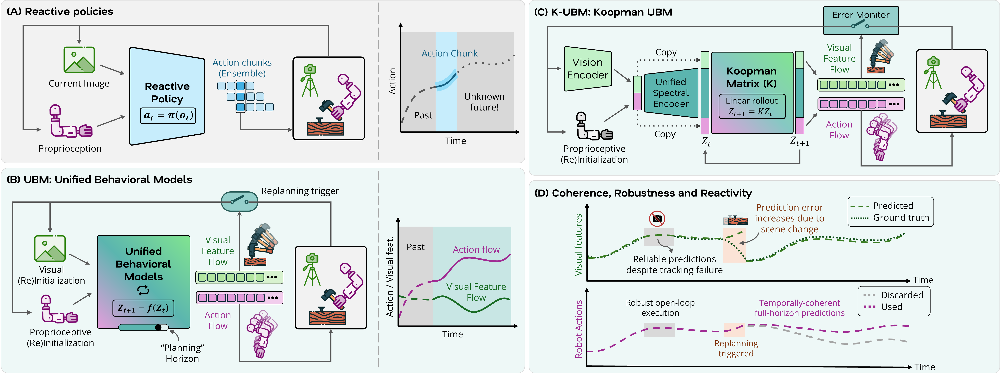
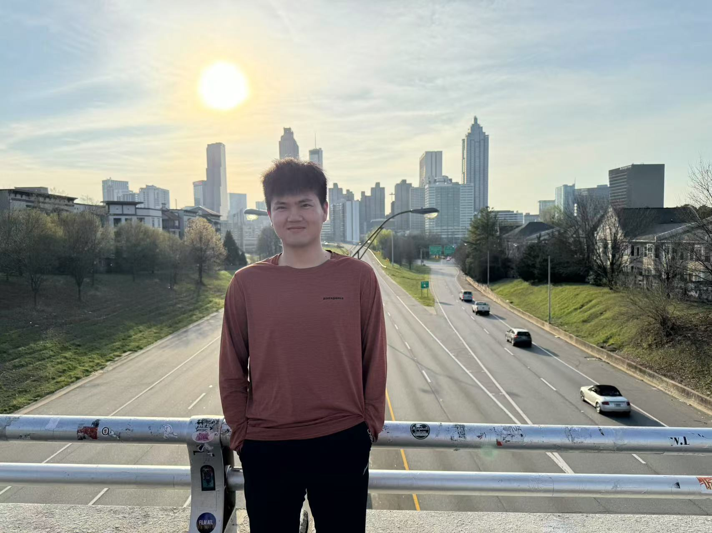
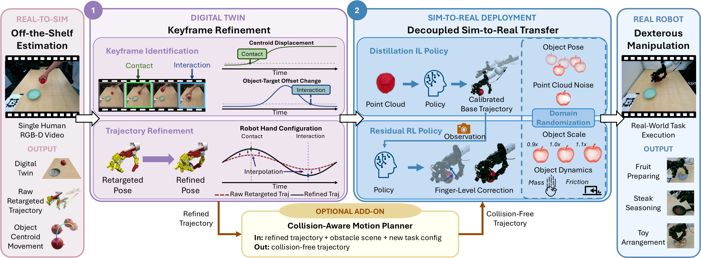

Robotics Systems Engineer · Tesla
Building the systems behind intelligent robots.
From production robotics to robot learning, I work on software that connects autonomy with the physical world.
I'm a Robotics Integrations Engineer at Tesla, with prior experience in industrial AMR systems and robotics research at Georgia Tech.

01 / Selected work
Research & real robots
Selected publications and hands-on systems work.

Real robot · Systems engineering
Real-Time Policy Execution on Dexterous Hardware
ROS-based execution and synchronized control for a Kinova arm and dexterous hands.
02 / Experience
Industry meets research
2026 — Present
Robotics Integrations Engineer
Tesla · Austin, Texas
Production robotics integration, multi-robot orchestration, distributed systems, simulation, and autonomy infrastructure.
2024 — 2026
Graduate Research Assistant
Georgia Tech · STAR Lab
Dexterous manipulation, visuomotor learning, sim-to-real, and real-robot policy execution.
2022 — 2024
Project Manager / Software Engineer
SEER Robotics · Shanghai
Industrial AMR software, fleet integration, localization, and international deployments.
03 / Interests
Looking ahead
Areas I want to keep building toward.
01 / Systems
Autonomy & Robotics Software
Reliable software, distributed robotics, and deployment at physical scale.
02 / Learning
Embodied AI & Robot Learning
Learned behavior, visuomotor models, and real-world intelligence.
03 / Infrastructure
Simulation & Evaluation
Sim-to-real, scalable evaluation, and infrastructure for learning-enabled robots.
04 / Contact
Let's connect.
Interested in robotics systems, autonomy, or embodied AI? Email me ↗